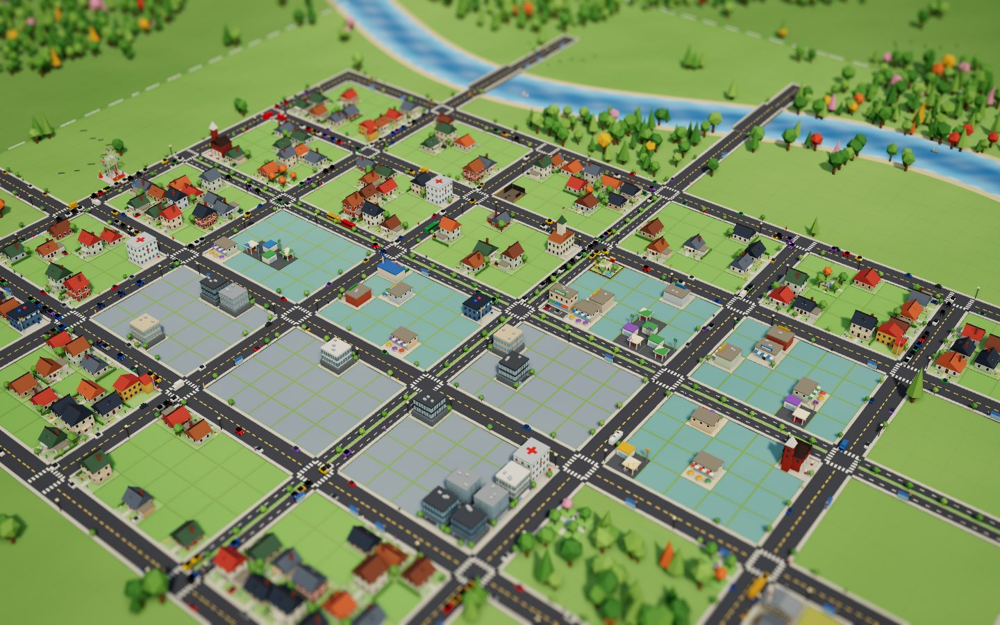
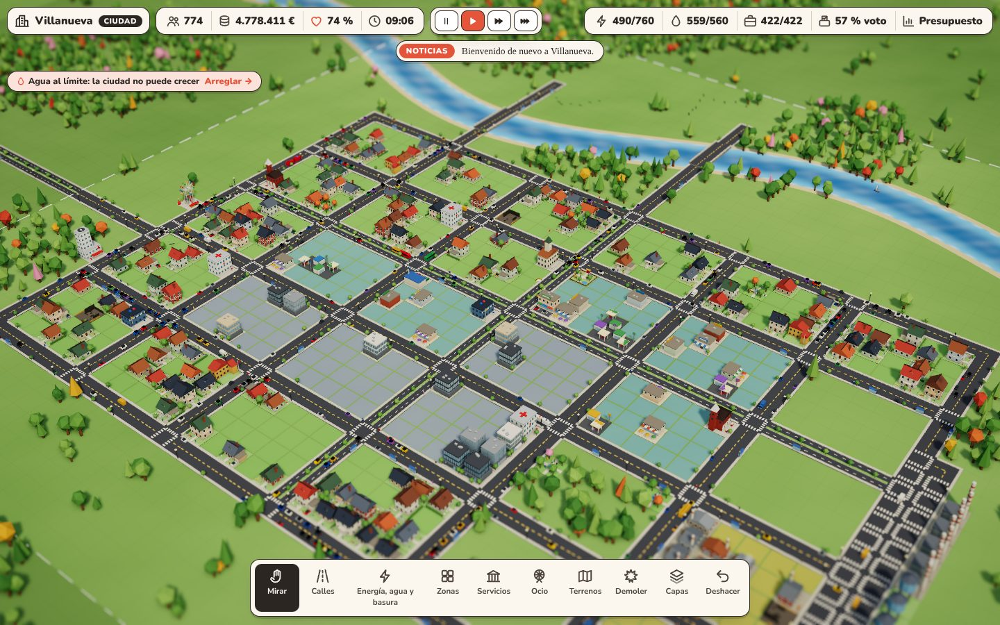
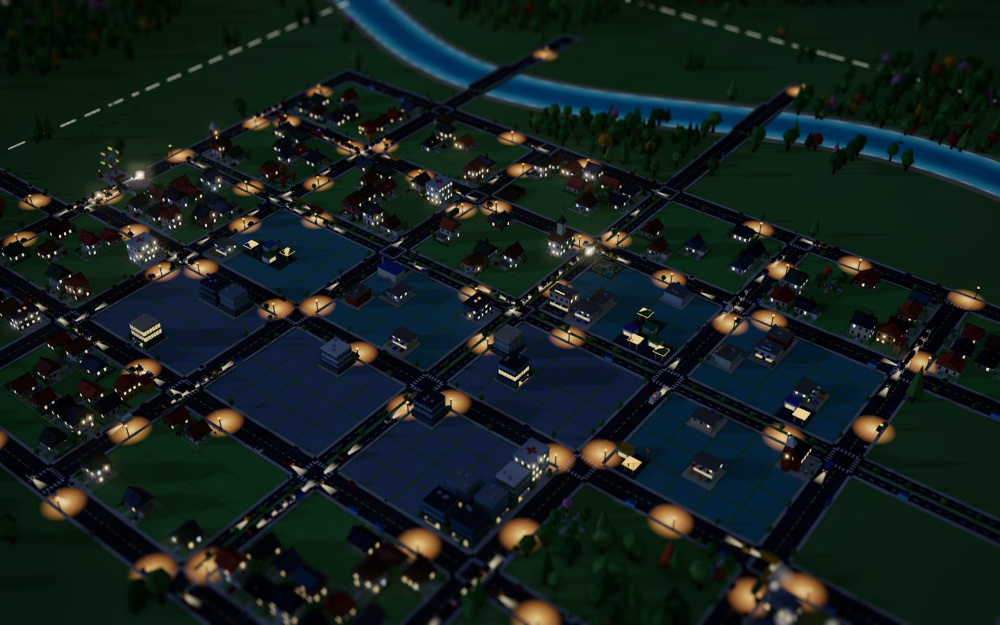
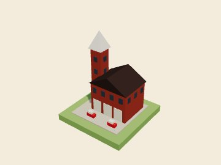
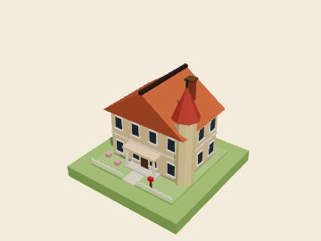
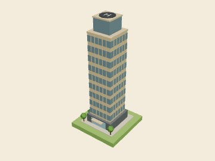
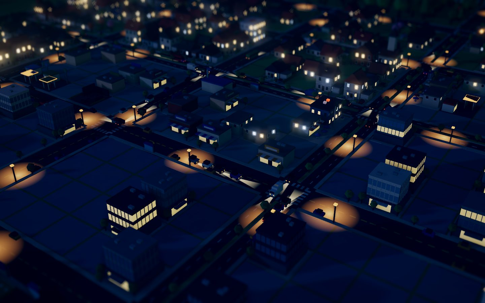

Calles con vida
Coches, taxis, autobuses que paran en sus marquesinas, furgonetas de reparto, el camión de la basura y patrullas con sirena. Hay semáforos y horas punta. Por el río pasan barcos.
Traza calles, marca barrios y mira cómo crecen solos. Pon hospitales, escuelas y bomberos, cuadra el presupuesto y gánate a los vecinos. Gratis y en el navegador.

Empiezas con un valle verde y un río. Lo que pase después depende de ti.
Coches, taxis, autobuses que paran en sus marquesinas, furgonetas de reparto, el camión de la basura y patrullas con sirena. Hay semáforos y horas punta. Por el río pasan barcos.
Marca zonas de vivienda, comercio, oficinas e industria. Verás levantarse cada edificio: solar vallado, andamios y grúa, hasta casas con porche, cafeterías con terraza, gasolineras, torres de oficinas y fábricas con muelles de carga.
Salud, escuelas, policía y parques solo cuentan para las casas que tienen cerca. Y a veces hay incendios: si hay bomberos cerca, sale un camión con la sirena encendida a apagarlo; si no, el edificio arde.
Mira, punto por punto, qué les gusta a tus vecinos y qué les molesta: desde el humo hasta los impuestos.
Ajusta la tasa de cada zona y los fondos de cada servicio. ¿Vas justo? Pide un préstamo al banco.
Preséntate por la izquierda, el centro o la derecha. Cada 10 días hay elecciones: si no convences, pierdes la alcaldía.
Transporte gratis, alquiler controlado, rebajas a empresas, mano dura, pacto verde, fiestas patronales… Cada una cambia la simulación.
Zoológico, estadio, museo y plaza mayor alegran a los vecinos y traen turistas que dejan dinero.
Gas, carbón barato pero sucio, parques solares o aerogeneradores que giran con el viento.
La gente pasea por las aceras y te dice lo que piensa, con nombre y edad. Mira el paro, las edades y qué vota cada barrio.
El sol se mueve, las ventanas se encienden al anochecer y algunos días llueve sobre tu ciudad.
Tu pueblo sube de rango al crecer: pueblo, villa, ciudad, gran ciudad y metrópolis. Cada ascenso trae una fiesta, un premio del Estado y edificios nuevos que desbloquear.
Pulsa L y mira la ciudad por dentro: valor del suelo, contaminación, atascos y hasta dónde llega cada servicio, en un mapa de color.
Parques, árboles, el río y los servicios hacen subir el valor de un barrio; el humo y los atascos lo hunden. Solo los barrios bonitos tienen edificios altos.
Convierte tus calles principales en avenidas de doble carril con mediana arbolada: más capacidad, menos atascos.
Haz clic en cualquier edificio: verás quién vive allí, qué servicios tiene cerca y qué le falta para crecer.
Gráficas día a día de población, dinero, aprobación, paro, contaminación y atascos para ver hacia dónde va tu ciudad.
Pájaros por la mañana, grillos de noche, el rumor del tráfico, la lluvia y las sirenas de los bomberos. Todo generado en tu navegador.
Pulsa H para esconder la interfaz y P para guardar una postal de tu ciudad.
96 × 96 casillas en 16 terrenos. Empiezas en el centro y compras tierra nueva a medida que tu ciudad sube de rango, como en los grandes simuladores.
Hasta 1.500 vehículos y 1.600 peatones con rutas reales. Una autopista te conecta con la región: llegan turistas y camiones de mercancías.
Vertederos e incineradoras, institutos y universidad, hospital y una red de metro que quita coches de la calle.
Una noria que gira de verdad y la Torre Urbania, un rascacielos emblemático que atrae turistas de toda la región.
Meteoritos, tornados y terremotos que arrasan barrios. Desactívalos si prefieres jugar tranquilo, o provócalos tú.
Iconos sobre los edificios te avisan de lo que falta: luz, agua, recogida de basura o una calle.

Una interfaz clara, con todo a mano, que no te saca de la ciudad.

Al caer la tarde el cielo se tiñe de naranja; de noche se encienden las farolas y las ventanas. Las fábricas echan humo y los coches recorren tus calles a todas horas.



La versión para Windows se abre a pantalla completa, funciona sin internet y arranca con los gráficos al máximo para tu tarjeta gráfica.
Windows 10 u 11 de 64 bits. Como la aplicación aún no está firmada, Windows puede mostrar «Windows protegió su PC»: pulsa Más información → Ejecutar de todas formas. En el navegador también puedes elegir «Ultra» en el menú del juego.

Cada edificio cambia de colores y detalles con cada construcción: no hay dos calles iguales. Ver el catálogo →
Sí. Puedes jugar sin pagar nada y sin crear una cuenta.
No. Se juega en el navegador. Funciona mejor en un ordenador con ratón, pero también se puede tocar en tableta y móvil.
En el menú del juego (el botón con el nombre de tu ciudad, arriba a la izquierda) puedes elegir la calidad de los gráficos: alta (sombras de contacto, brillo nocturno y efecto maqueta), media o baja. Si el juego nota que va a tirones, baja la calidad él solo.
Sí. Se guarda sola en tu navegador cada pocos segundos y al cerrar la pestaña. Para no perderla nunca, en el menú del juego puedes guardarla en un archivo y cargarla en otro ordenador.
Sí: pulsa Deshacer en la barra de herramientas o Ctrl+Z. Se puede deshacer todo lo construido durante el día de juego en curso.
Cada 10 días votan tus vecinos. Tu resultado depende de la aprobación y de si tu partido encaja con lo que vota la ciudad: las ciudades con mucha industria y oficinas tiran a la derecha, y las que tienen buenos servicios, a la izquierda. Si sacas menos del 50 %, tendrás que repetir campaña.
Necesitan una calle a menos de dos casillas, luz y agua de sobra, y demanda. Si la red eléctrica o el agua están al límite, aparece un aviso rojo bajo la barra superior: púlsalo y te lleva a construir lo que falta. Para subir de nivel también hace falta un buen valor del suelo: pon parques, árboles y servicios cerca y aleja las fábricas. Haz clic en una casa con la herramienta Mirar y verás exactamente qué le falta.
Se desbloquean al subir de rango: pueblo (100 habitantes: ayuntamiento, plaza, autobuses, parque solar y vertedero), villa (300: oficinas, museo, aerogeneradores, avenidas e instituto), ciudad (700: zoológico, hospital, noria e incineradora), gran ciudad (1.500: estadio, metro y universidad) y metrópolis (3.000: Torre Urbania). Cada ascenso trae un premio en dinero y te deja comprar más terrenos.
Sí, para Windows 10 y 11: descarga el instalador. Funciona sin internet, a pantalla completa (F11) y con los gráficos en Ultra. Tus partidas del navegador no pasan solas a la aplicación: guárdalas en un archivo desde el menú del juego y cárgalas allí.
Sí. Pulsa M o desmarca «Sonido» en el menú del juego. Todo el sonido se genera en el navegador, así que no descarga nada.